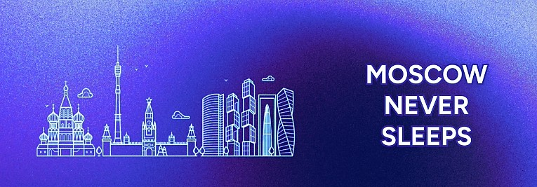
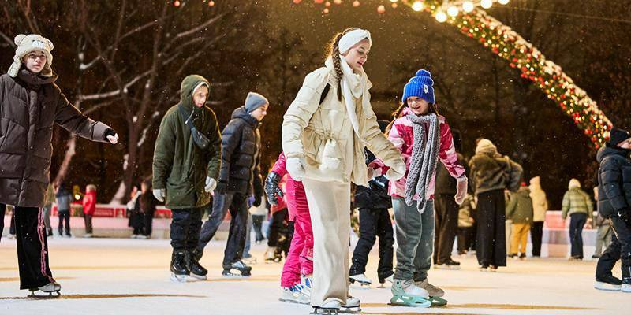
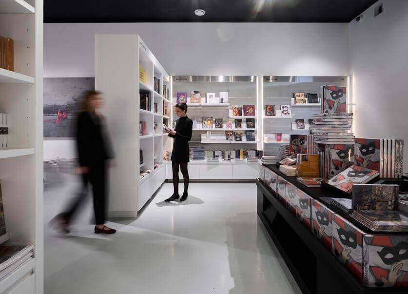

АННОТАЦИЯ К ПРОЕКТУ


Привет! 🤍 Мы - студенты Московского Политехнического Университета, и этот канал создан, чтобы показать Москву с необычной стороны. Здесь ты найдешь экскурсии, советы по стилю и гардеробу, кулинарные открытия и многое другое. Мы приглашаем тебя исследовать с нами уникальные места, магию московских улиц и погрузиться в мир столичных приключений. Подпиcывайся на нас в соцсетях и не пропускай новые публикации!
Видеоподкаст «Moscow Never Sleeps» — это инновационный медиапроект, созданный в рамках проектной деятельности Московского Политеха. Целью проекта является создание пространства, в котором жители и гости столицы смогут найти информацию о различных местах города в интересной и понятной форме. Мы стремимся привлечь внимание молодёжи и абитуриентов, используя современные форматы подачи контента в YouTube, ВКонтакте, Telegram и TikTok.
